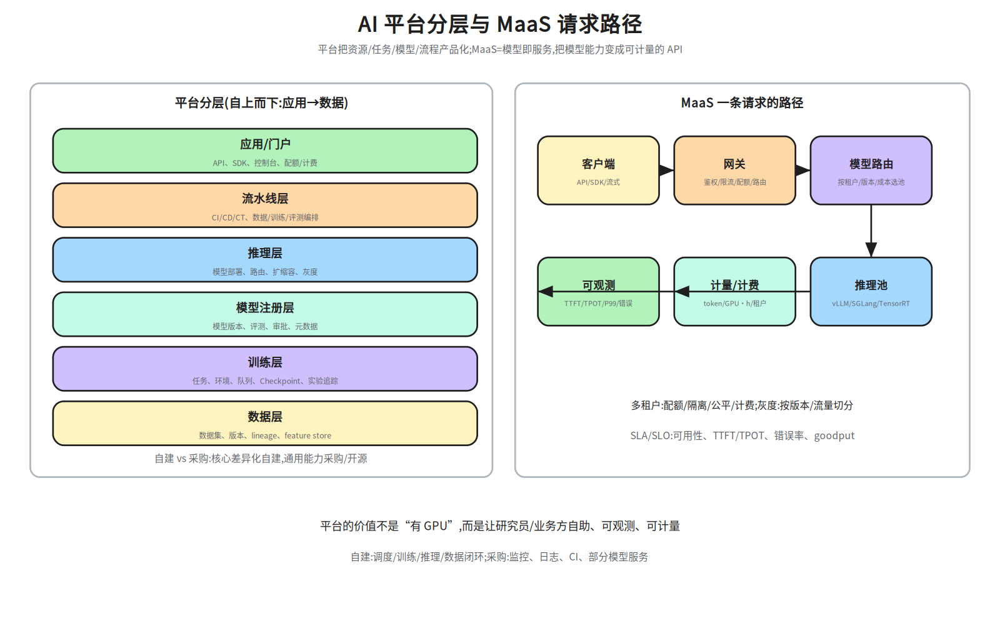
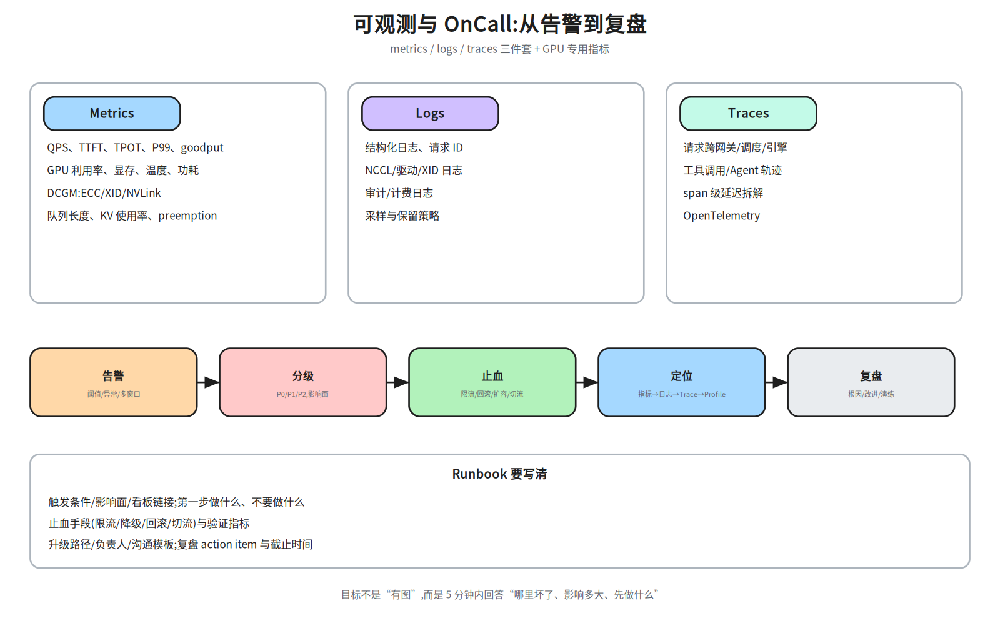
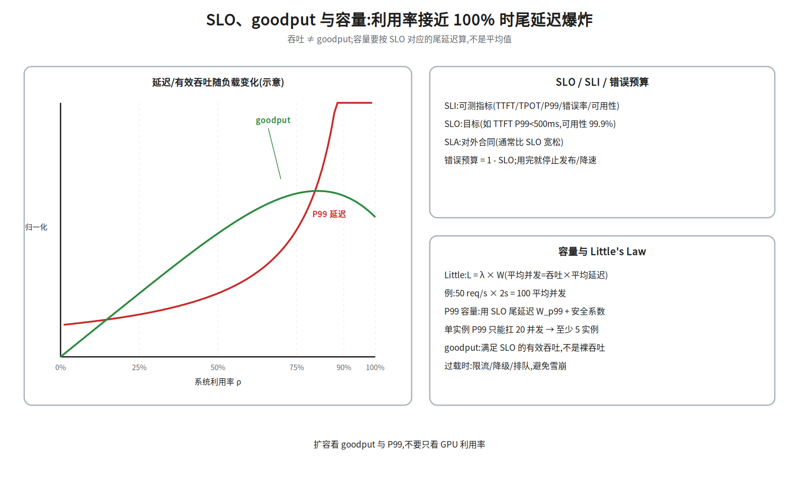
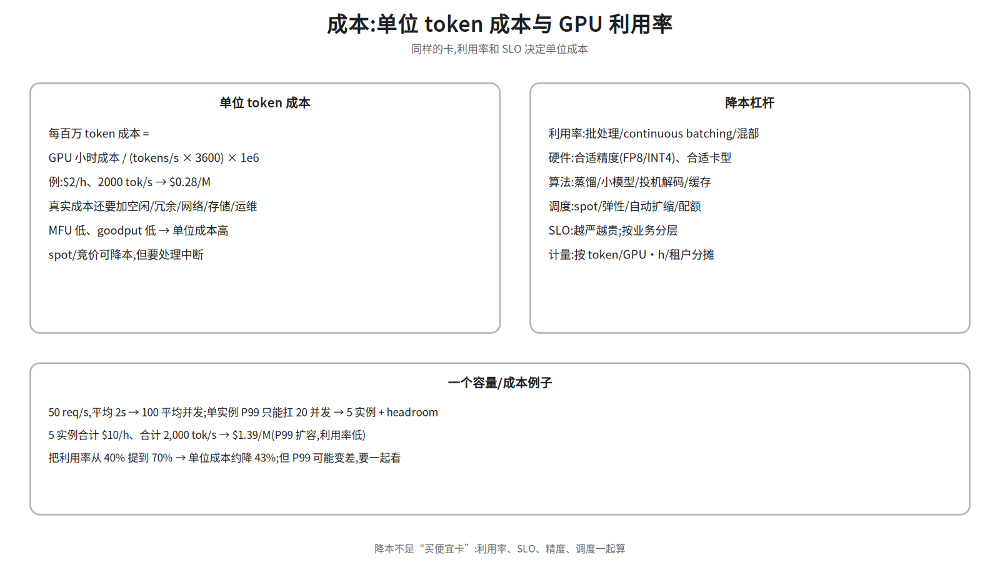

M2-5 · 平台与稳定性¶
本层回答：怎么把训练/推理/数据/模型能力变成研究员和业务方自助、可观测、可计量的平台？ 线上出问题时，怎么在 5 分钟内判断“哪里坏了、影响多大、先做什么”？
前置（按节）： - §2–§3：
notes/24_distributed_base.md §7（K8s/gang/多租户/虚拟化）、notes/23_training_systems.md §6（Checkpoint/容错）。 - §4–§6：notes/22_inference_systems.md §1、§11–§13（TTFT/TPOT/SLO/容量）。 - §7–§8：notes/24_distributed_base.md §8（XID/NCCL hang/可靠性）。建议路径（每次 45 分钟）： ① §1–§3（平台分层 / MaaS / MLOps）；② §4–§5（可观测 / SLO / 容量）； ③ §6–§7（故障 / 成本）；④ §8（安全合规，点到为止）。
深度标注：§1–§6 为必学；§7 成本为必学（至少会算单位 token 成本）； §8 安全/合规为了解；调度/网络/存储细节回到 M2-4。
0. 依赖图（学习顺序）¶
graph TD
A["训练/推理/调度底座<br/>(M2-2/3/4)"] --> B["平台分层<br/>数据/训练/模型/推理/流水线"]
B --> C["MaaS 与多租户<br/>API/配额/计费/灰度/扩缩"]
B --> D["MLOps<br/>CI/CD/CT/lineage/治理"]
C --> E["可观测<br/>metrics/logs/traces/DCGM"]
E --> F["SLO/SLI/错误预算<br/>P99/goodput/容量"]
F --> G["故障与稳定性<br/>on-call/runbook/复盘/容灾"]
G --> H["成本<br/>单位 token/利用率/分摊"]
H --> I["安全与合规<br/>隔离/隐私/模型保护"]汇点是：能把一个 AI 系统产品化、可观测、可计量、可恢复，并用 SLO 和成本做取舍。
1. 平台分层：从资源到用户¶

| 层 | 解决什么 | 典型能力 |
|---|---|---|
| 数据层 | 数据从哪来、版本是什么 | 数据集、lineage、feature store、质量 |
| 训练层 | 任务怎么跑 | 任务提交、环境、队列、Checkpoint、实验追踪 |
| 模型注册层 | 哪个模型能上线 | 版本、评测、审批、元数据 |
| 推理层 | 怎么服务 | 部署、路由、扩缩容、灰度 |
| 流水线层 | 怎么串起来 | CI/CD/CT、数据/训练/评测编排 |
| 应用/门户 | 用户怎么用 | API、SDK、控制台、配额/计费 |
自建 vs 采购：调度、训练、推理、数据闭环是核心差异化，通常自建； 监控/日志/CI/部分模型服务可以采购或开源。不要为了“全栈自研”重复造轮子。
平台的价值不是“有 GPU”，而是让用户自助（不用找人开权限）、可观测（知道任务在干什么）、 可计量（知道花了多少）。这三件事决定采用率。
2. MaaS：模型即服务¶
一条请求的路径：
2.1 多租户¶
- 配额：每租户的 GPU 数、并发请求数、token/月上限；
- 隔离：命名空间、MIG/time-slicing、网络策略；训练任务优先整卡；
- 公平：fair-share/优先级/抢占；空闲资源可借用，但要有回收机制；
- 计费：按 token、GPU·小时、存储、网络分别计量；账单可追溯到任务/租户。
多租户不是“加个 namespace”：要同时解决隔离、公平、配额、计费、审计。
任务状态机：提交 → 准入(配额/权限) → 排队 → 运行 → Checkpoint → 成功/失败/取消。
每个状态都要可观测、可重试、可取消；准入要检查配额、镜像/环境、数据权限，
避免“先占资源再失败”。
配额层级：租户 → 项目/团队 → 用户/任务；支持硬配额（不能超）和软配额（可借用， 但高优任务来了要回收）。配额要和优先级/抢占一起设计。
2.2 模型路由、灰度、回滚¶
- 路由：按租户/版本/成本/地域选择模型池；A/B 测试、影子流量；
- 灰度：按流量比例/用户群/请求特征逐步放量；
- 回滚：模型版本、配置、提示词都要可回滚；回滚要能在分钟级完成；
- 热更新：不中断服务地换权重；注意 KV Cache/前缀缓存要随模型版本失效。
2.3 自动扩缩与 SLA¶
- 指标：队列长度、TTFT SLO、GPU 利用率、goodput；
- 扩容有冷启动（拉镜像/加载模型），要预留 buffer；
- SLA 是对外合同，SLO 是内部目标；SLA 通常比 SLO 宽松。
- 过载时：限流、排队、降级（小模型/短输出）、切流；不要等雪崩。
3. MLOps：可复现、可追溯、可治理¶
- CI/CD/CT：代码/配置/数据/模型都要版本化；CT（continuous training）按数据漂移触发；
- 可复现：固定代码、数据、环境、随机种子、硬件；记录每一步的输入/输出；
- Artifact lineage：数据 → 训练 → 模型 → 部署，每条边可追溯；
- Feature store：离线/在线特征一致，避免训练-服务偏差；
- 模型治理：评测、审批、卡点、审计、合规；谁在什么时候把哪个模型放上线。
面试问“平台怎么设计”：先讲任务模型/资源模型/权限模型，再讲生命周期 （提交 → 排队 → 运行 → Checkpoint → 评测 → 注册 → 部署 → 监控），最后讲失败路径。
3.1 把研究员需求抽象成 API¶
一个最小训练 API 的四块：
POST /jobs {image, command, resources(GPU/CPU/mem), dataset, priority}
GET /jobs/{id} → {state, queue_position, metrics, checkpoint_uri, error}
POST /jobs/{id}/cancel
POST /jobs/{id}/retry {from_checkpoint: true}
- 任务模型：镜像/命令/资源/数据/优先级/超时/重试策略；
- 资源模型：GPU 型号/数量、拓扑（整机/NVLink 域）、存储挂载；
- 权限模型：谁能提交到哪个队列、能看哪些数据/日志、能花多少配额；
- 错误模型：可重试（硬件/抢占）vs 不可重试（代码/数据 poison）；返回结构化错误码；
- 异步：提交返回 job_id，状态用轮询/事件/Webhook；日志/指标用独立接口。
API 要稳定、可组合、可观测；不要把内部调度细节泄漏给用户。
4. 可观测：metrics / logs / traces¶

| 信号 | 看什么 | AI 专用 |
|---|---|---|
| Metrics | QPS、延迟、错误率、饱和度 | TTFT/TPOT/P99/goodput、GPU 利用率、KV 使用率 |
| Logs | 结构化日志、请求 ID、错误栈 | NCCL/驱动/XID、审计/计费 |
| Traces | 跨服务调用链、span 延迟 | 网关→调度→引擎→工具调用 |
| GPU | 利用率、显存、温度、功耗 | DCGM：ECC/XID/NVLink |
排障顺序：先看影响面（多少请求/任务、哪个租户/地域），再看时间线 （何时开始、和什么变更重合），然后按层排查：网关 → 调度 → 引擎 → GPU → 网络 → 存储 → 模型。
4.1 告警与 OnCall¶
- 告警要可执行：每条告警对应一个 runbook，不要求人“自己猜”；
- 分级：P0（全站/数据损坏）、P1（核心功能降级）、P2（局部/可绕过）；
- 止血优先：限流/回滚/扩容/切流，先恢复再定位；
- 复盘：根因、影响、时间线、改进项、负责人、截止时间；不做“背锅会”。
AI 辅助 OnCall（点到为止）：
- 告警聚合/去重、根因候选排序、日志摘要、runbook 检索、相似故障推荐；
- 自动生成“影响面 + 建议止血步骤 + 需要谁确认”的卡片；
- guardrail：高风险动作（删数据/改配额/重启集群）必须人工确认；只读诊断可自动；
- 评估：MTTD/MTTR、误报率、建议采纳率；不要用“AI 说没事”替代验证。
4.2 Runbook 模板¶
可观测的目标不是“有图”，而是 5 分钟内回答：哪里坏了、影响多大、先做什么。
5. SLO / SLI / 错误预算 / 容量¶

5.1 指标口径¶
| 指标 | 含义 | 注意 |
|---|---|---|
| SLI | 可测指标 | 要能稳定采集、和用户体验相关 |
| SLO | 内部目标 | 如 TTFT P99 < 500 ms、可用性 99.9% |
| SLA | 对外合同 | 通常比 SLO 宽松，带赔偿条款 |
| 错误预算 | 1 - SLO |
用完就停止发布/降级/扩容 |
| P99 | 99% 请求的延迟上界 | 容量看尾延迟，不看均值 |
| goodput | 满足 SLO 的有效吞吐 | 不是裸吞吐 |
5.2 容量：Little's Law 与排队¶
例：50 req/s × 2 s = 100 平均并发。但P99 容量要用 SLO 对应的尾延迟 + 安全系数，不能直接用平均延迟。单实例 P99 只能扛 20 并发 → 至少 5 实例 + headroom。
利用率接近 100% 时，排队延迟非线性爆炸；goodput 会在饱和前达峰后下降。 过载时主动限流/降级，比“让所有请求都超时”好。
5.3 训练集群的 SLO/SLI¶
训练集群的 SLO 不是“可用性 99.9%”这么简单：
- 任务成功率：提交后能跑完的比例；
- 有效训练时间：扣除故障/排队/Checkpoint 后的时间；
- Checkpoint 耗时/RTO：故障后多久能恢复；
- 调度排队 P99：大作业等多久；
- GPU 利用率/碎片率：资源效率；
- 故障率/MTTR：硬件/网络/存储故障的恢复时间。
训练 SLO 要和业务目标绑定：比如“7 天内完成 1T token 训练，故障导致的回退不超过 2 次”。
6. 故障与稳定性¶
6.1 分层定位¶
| 层 | 症状 | 检查 |
|---|---|---|
| 网关/客户端 | 超时、限流、错误码 | 网关指标、配额、队列 |
| 调度 | 排队久、任务起不来 | 队列、gang、配额、节点状态 |
| 引擎 | TTFT/TPOT 高、吞吐低 | batching、preemption、KV |
| GPU | OOM、XID、降频 | DCGM、nvidia-smi、dmesg |
| 网络 | 多卡/PD 变慢、NCCL 超时 | IB/RoCE、PFC、NCCL 日志 |
| 存储 | Checkpoint/数据加载慢 | fio、iostat、元数据 |
| 模型/输入 | 长 prompt/长输出 | 输入输出长度分布 |
大面积 hang 的三步：① 看是否所有节点都卡在同一个 collective（NCCL_DEBUG=INFO/进程栈）；
② 缩小到 2/8 卡复现，换节点/网卡二分；③ 查坏节点/链路/存储，隔离后从 Checkpoint 恢复。
不要先重启整个集群。
6.2 降级、容灾与演练¶
- 降级：小模型、短输出、关闭非核心功能、缓存兜底；
- fallback：多模型/多地域/多供应商；切换要能自动触发；
- 多地域/容灾：数据/模型复制、DNS/流量切换、RTO/RPO 目标；
- 混沌工程：定期注入故障（节点/网络/依赖），验证预案；
- 演练：on-call 轮值、runbook 走查、复盘 action 闭环。
不要等故障发生才第一次打开 runbook；平时要演练。
6.3 GPU 故障自动发现与自愈¶
状态机：健康 → 可疑 → 隔离(cordon) → drain → 维修/重启 → 回归验证 → 健康。
- 检测：DCGM 巡检 ECC/XID/NVLink/温度/功耗；连续 N 次阈值/自检失败才判可疑，
避免误杀；
dcgmi diag/nvidia-smi -q做二次确认。 - 隔离：cordon 阻止新任务；drain 驱逐/等待 Checkpoint；不要直接拔卡。
- 恢复：重启驱动/节点、跑 burn-in、
nccl-tests验证；通过后才回到资源池。 - 任务侧：坏节点上的任务从 Checkpoint 重调度；记录故障根因，避免反复踩同一节点。
自愈的目标是“缩短 MTTR”，不是“永不故障”；要有误判保护和人工兜底。
6.4 训练任务失败：分类、重试、恢复¶
| 类型 | 例子 | 处理 |
|---|---|---|
| 硬件 | XID/ECC/NVLink/节点掉线 | 隔离节点、重调度、从 Checkpoint 恢复 |
| 软件 | OOM、NCCL hang、镜像/依赖 | 修配置/换镜像；不要盲目重试 |
| 数据 poison | 某个 shard 导致 NaN/崩溃 | 定位 shard、跳过/修复；重试会再次失败 |
| 抢占 | 高优任务来了 | 保存 Checkpoint、优雅退出、排队重试 |
重试策略：指数退避 + 上限（如 3 次）；同一失败原因连续出现要停止并告警； 重试要幂等（从 Checkpoint 恢复，不重复写坏数据）；gang 作业要整组重调度， 避免半组启动。恢复点：最近的 Checkpoint + 数据 loader/RNG 状态； 恢复后要校验 step/学习率/优化器状态。
“失败就重启”是最贵的策略：先分类，再决定重试/修复/隔离。
7. 成本：单位 token 成本与利用率¶

例：$2/h、2000 tok/s → 2/(2000×3600)×1e6 ≈ $0.28/M token。
真实成本还要加空闲容量、冗余、网络、存储、运维；goodput 低时单位成本会显著上升。
降本杠杆：利用率（batching/混部）、硬件（FP8/INT4/合适卡型）、算法（蒸馏/小模型/ 投机/缓存）、调度（spot/弹性/配额）、SLO 分层、计量分摊。
降本不是“买便宜卡”：要同时看 利用率、SLO、精度、调度； 把利用率从 40% 提到 70% 可能降本 43%，但 P99 可能变差。
Showback vs Chargeback：
- Showback：给租户看账单/用量，不真正扣钱；适合平台早期；
- Chargeback：按预算真实扣减/结算；需要准确的计量、标签、价格表；
- 共享资源：网关/存储/监控按用量分摊；空闲容量按配额或实际使用分摊，规则要透明；
- 标签：租户/项目/任务/模型/环境；账单可下钻到任务，支持预算告警。
例：租户 A 本月用 10,000 GPU·h（\(2/h）+ 5 亿 token（\)0.28/M）→
$20,000 + $140 = $20,140；再按共享存储/网络分摊。
8. 安全与合规（点到为止）¶
- 多租户隔离：网络/存储/GPU 隔离；防止跨租户数据泄漏；
- 数据隐私：脱敏、加密、访问控制、审计；训练数据/日志的保留策略；
- 模型/IP 保护：权重加密、访问审批、水印；防止模型被窃取/滥用；
- 合规：数据出境、许可证、内容安全；按业务所在地要求处理。
这一节不展开：面试点到“隔离/隐私/审计/合规”即可，深入要看具体行业。
9. 面试要点¶
- 训练平台怎么设计？ → 任务模型/资源模型/权限模型；生命周期（提交→排队→运行→ Checkpoint→评测→注册→部署→监控）；失败路径（重试/恢复/降级）。
- LLM 服务的 SLO 怎么定？ → TTFT/TPOT/可用性/错误率/goodput；按业务分层； P99 容量 + 安全系数；错误预算。
- GPU 利用率怎么提高？ → batching/continuous batching、混部、拓扑感知调度、 MIG/共享、减少空闲/碎片；但不要牺牲 P99。
- 线上 P99 升高怎么定位？ → 先止血（限流/回滚/扩容），再按网关→调度→引擎→GPU→ 网络→存储→模型分层排查；看时间线和变更。
- 训练任务大面积 hang 怎么排查？ → NCCL_DEBUG、进程栈、网络/存储、坏节点； 缩小规模复现；区分“真死”和“慢”。
- GPU 故障怎么自动发现/自愈？ → DCGM/XID/ECC 巡检、cordon/drain、任务重调度、 Checkpoint 恢复；热备/冗余。
- 模型上线怎么灰度/回滚/计量？ → 按流量/用户/版本切分；回滚模型/配置/提示词； 按 token/GPU·h/租户计量。
- 平台怎么分摊成本？ → GPU·小时 + token + 存储 + 网络；按租户/任务/模型打标签； 账单可追溯；配额/预算告警。
- 怎么把研究员需求抽象成 API？ → 先看任务生命周期与失败路径，再定义资源/权限/ 产物模型；API 要稳定、可组合、可观测。
- 怎么用 AI 提升 OnCall？ → 告警聚合/根因推荐/日志摘要/runbook 检索/自动止血； 但要有 guardrail，不能自动执行高风险操作。
AI OnCall 的边界：数据要有权限/脱敏；建议要可解释、可回滚；自动动作只允许 低风险（查状态、拉日志、扩容只读副本），高风险（回滚/删数据/切流）必须人工确认。 指标：MTTR、误报率、建议采纳率、自动化覆盖率。
10. 常见坑¶
- 只建平台不管采用率：接口难用、文档缺失，研究员绕开平台。
- SLO 只看平均值：P99 超时，用户已经跑了。
- 把 SLA 当 SLO：对外承诺和内部目标混为一谈。
- 告警没有 runbook：值班的人不知道先做什么。
- 降级没有演练：真故障时切不过去。
- 成本只看 GPU 单价：利用率/goodput 低，便宜卡也贵。
- 多租户只做 namespace：没有隔离/配额/计费，迟早出事。
- 监控只有 dashboard：没有告警/追踪/日志关联，定位靠猜。
动手清单（60–90 分钟）¶
- SLO 账本：给定 QPS、平均延迟、SLO P99，用 Little's Law 估并发与实例数； 再加 30% headroom，比较“按平均”和“按 P99”的差异。
- 单位成本：给定 GPU 单价、tokens/s、利用率，算
$/M token；扫利用率 30–80%， 画成本曲线。 - Runbook：为一个 LLM 服务写一页 runbook（触发条件/影响面/止血/升级/复盘）。
- 可观测清单：列出你会采集的 10 个指标（含 DCGM/TTFT/TPOT/goodput/队列/KV）， 说明每个指标的告警阈值和动作。
- 成本分摊：给一个多租户平台设计标签体系（租户/任务/模型/环境）， 说明如何把 GPU·h 和 token 账单分摊到租户。
验收标准：能对一个线上故障给出“影响面 + 止血 + 分层定位 + 复盘”的完整链路， 并能用 SLO/成本数字解释取舍。
相关图¶
25a_platform— 平台分层 + MaaS 请求路径；25b_slo— SLO/goodput/容量曲线；25c_observability— metrics/logs/traces + OnCall 流程；25d_cost— 单位 token 成本与降本杠杆。
下一步¶
- M2-6 前沿与端侧：Agent Runtime、RL Infra、端侧部署、异构芯片。
- 回到 M2-4 §7–§8 补调度/可靠性细节；回到 M2-3 §11–§13 补推理 SLO/容量。